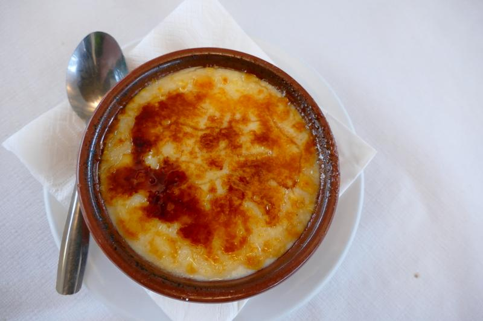
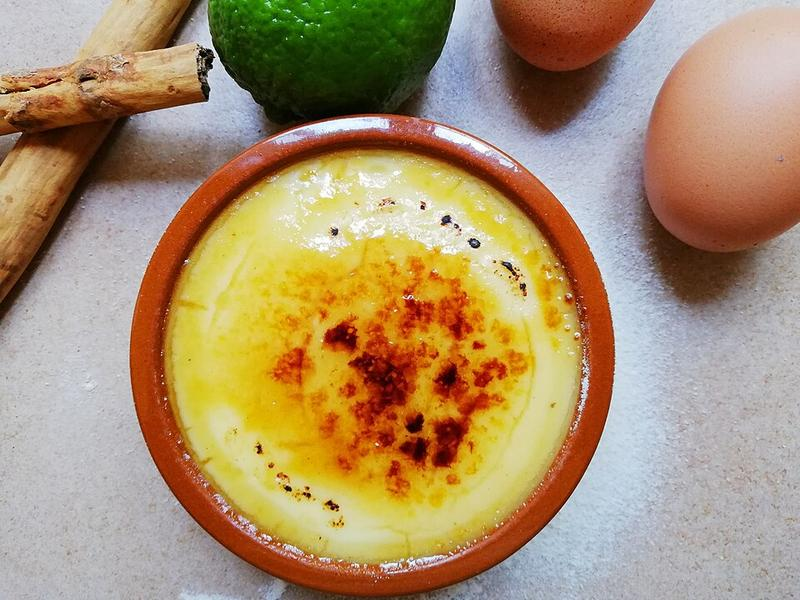
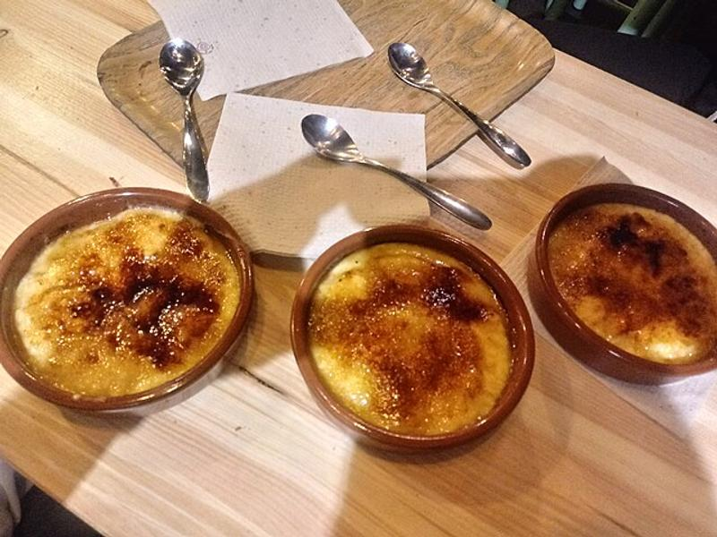

Crema catalana

La crema catalana és un dels postres més estimats...
Per aconseguir una crema catalana perfecta...
Tot i ser un postre tradicional, admet variacions...



La crema catalana és un dels postres més estimats...
Per aconseguir una crema catalana perfecta...
Tot i ser un postre tradicional, admet variacions...

